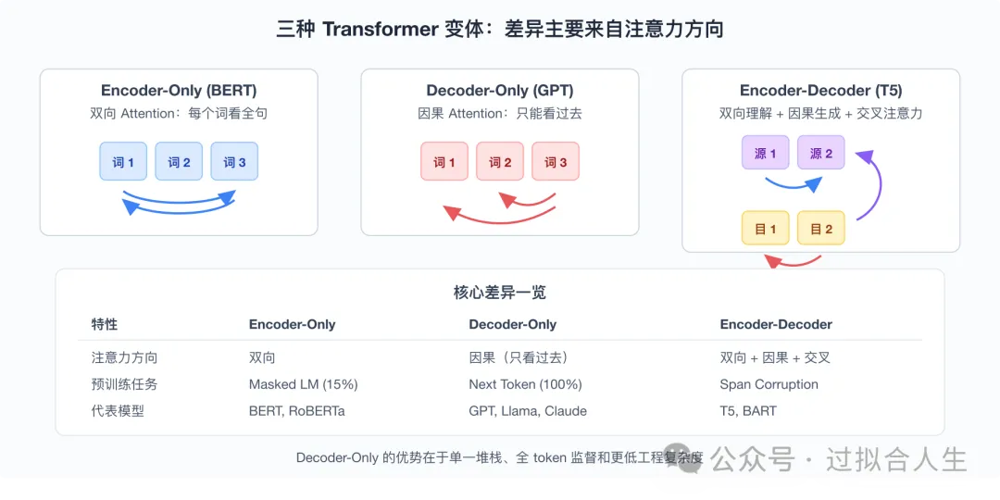

把前3篇的知识串起来，像追踪一个快递包裹一样追踪一个 token 从输入文本到输出概率的完整旅程。逐层解剖 Decoder Block 的四大组件——Attention、残差连接、FFN、LayerNorm——理解它们为什么这样设计，以及参数量到底花在哪里。
一、引子：三个"变形金刚"
Transformer 不是单一模型，而是一个家族。
2017 年 Google 发表《Attention Is All You Need》时，提出的是一个完整的 Encoder-Decoder 架构——左边 6 层 Encoder 读取源语言，右边 6 层 Decoder 生成目标语言，中间用交叉 Attention 连接。这个设计是为机器翻译量身打造的。
但后来的发展出乎所有人意料：研究者把这个架构"拆开"，只保留一半，反而做出了更强大的模型。
Encoder-Only（BERT 路线）：只保留左边的 Encoder。每个词都能看到整句话，适合理解任务——情感分析、问答、语义搜索。但有个致命缺陷：它不会"说话"，只能"理解"。
Decoder-Only（GPT 路线）：只保留右边的 Decoder，去掉交叉 Attention。每个词只能看过去，天生适合生成文本。GPT-1（1.17 亿参数）、GPT-3（1750 亿）、GPT-4（估计 1.8 万亿）——全部是这个架构。今天的 Llama、Claude、DeepSeek 也无一例外[1]。
Encoder-Decoder（T5 路线）：保留完整的两边，用在对齐的序列任务上——翻译、摘要。T5 证明了"把所有 NLP 任务都看成文本到文本的转换"这一统一框架的可行性。
三种变体的核心差异只有一个：注意力掩码。Encoder 是双向的，Decoder 是因果的，Encoder-Decoder 则是两者结合。除此之外——Attention 机制、FFN、残差连接、LayerNorm——所有组件完全相同[2]。
这就引出了一个深刻洞察：Transformer 的通用性来自它的"无偏见"。 CNN 假设相邻像素相关，RNN 假设顺序处理，而 Transformer 除了位置编码外，对输入结构不做任何预设。这让它能被用于语言、图像、蛋白质、音频——几乎任何可以用"一组元素"描述的数据[3]。
架构对比：一张表看懂三种变体
特性 | Encoder-Only (BERT) | Decoder-Only (GPT) | Encoder-Decoder (T5) |
|---|---|---|---|
| 注意力方向 | 双向（看整句） | 因果（只看过去） | 双向 + 因果 + 交叉 |
| 预训练任务 | Masked LM（mask 15%） | Next Token Prediction（100%） | Span Corruption |
| 数据利用率 | 15% token 参与损失 | 100% token 参与损失 | 约 50% |
| 生成能力 | ❌ 不能生成 | ✅ 自回归生成 | ✅ 自回归生成 |
| 代表模型 | BERT, RoBERTa | GPT, Llama, Claude | T5, BART |
| 当前地位 | 理解任务专用 | 现代 LLM 标准 | 翻译/摘要专用 |
上表中最关键的数字是"数据利用率"——BERT 每轮只监督 15% 的 token，意味着 85% 的计算没有直接优化目标。Decoder-Only 的 Next Token Prediction 让每个位置都参与损失计算，训练效率是前者的 6~7 倍。这不是 Decoder-Only "更聪明"，而是它"更勤奋"——每轮训练都把数据压榨到极致。
另一个常被忽视的点是工程复杂度。Encoder-Decoder 需要维护两套参数、两种 Attention 掩码、两个优化器状态。训练基础设施（分布式策略、梯度检查点、推理引擎）都要为两套系统做适配。Decoder-Only 把这一切都简化为"重复堆叠同一种 block"——这对扩展到数千亿参数至关重要。
但 Decoder-Only 为什么赢了？三个原因：
简单性：单层堆栈比两层更容易扩展和优化。训练基础设施、分布式策略、推理引擎——所有工程优化都只需要针对一种 block。
训练效率：BERT 的 Masked Language Modeling 每轮只 mask 15% 的 token，意味着 85% 的数据没有被直接监督。而 Decoder-Only 的 Next Token Prediction 让每个 token 都参与损失计算，数据利用率更高。
涌现能力：规模超过 100B 后，Decoder-Only 模型自发发展出 in-context learning（给几个例子就能学会新任务）和 chain-of-thought 推理能力。这些能力在 Encoder-Only 或 Encoder-Decoder 模型中未被观察到[4]。
一个有趣的反事实：如果 2018 年 BERT 的团队选择了 Decoder-Only 架构，今天的 LLM 生态会不会完全不同？历史没有如果，但 Decoder-Only 的胜利告诉我们：在深度学习中，架构的简单性往往是可扩展性的前提。
本文聚焦 Decoder-Only 架构——因为它是现代 LLM 的事实标准。接下来，我们会像追踪一个快递包裹一样，追踪一个 token 穿越神经网络的全过程。

图 1：三种 Transformer 变体。Encoder-Only 双向看，Decoder-Only 只能看过去，Encoder-Decoder 两边都看。Decoder-Only 凭借简单性和训练效率成为现代 LLM 的标准选择。
二、Decoder Block：Transformer 的基本单元
想象一座现代化的信息加工厂。原料（token 向量）从一端进入，经过多个加工工位，最终变成成品（上下文表示）。每个 Decoder Block 就是这座工厂的一个"车间"。
一个标准的 Decoder Block（Pre-Norm 版本）包含四个工位，按处理顺序排列：
工位 1：Masked Self-Attention（分拣中心）
这是你已经熟悉的组件。每个 token 向所有其他 token 发问"你跟我有什么关系？"，然后根据答案重新组合自己的表示。
在第3篇中，我们用图书馆类比理解了 Q/K/V。这里补充一个物流视角：Attention 就像智能分拣系统——每个包裹（token）根据标签（Key）匹配自己的目的地，然后按优先级（注意力权重）整合所有相关信息。
工位 2：残差连接（Bypass 高速公路）
Attention 的输出不是直接传给下一层，而是与原始输入相加：
output = input + Attention(input)这看起来是个小动作，但它决定了 Transformer 能堆多深。下一节会详细解释。
工位 3：FFN（深度加工车间）
Attention 让 token 之间交流了信息，但交流本身不产生新见解。FFN 的作用是对每个 token 的表示做独立的非线性变换——就像每个工人在交流完之后，独自深入思考。
FFN 的结构极其简单：两个线性层夹一个激活函数。但隐藏层维度是输入的 4 倍（比如 d_model=4096 → d_ff=16384），这让它的参数量远超 Attention。
工位 4：LayerNorm（质量校准仪）
深度网络训练时，数值会逐层漂移——有的层输出变得极大，有的变得极小。LayerNorm 的作用是把每层的输出"拉回到合理范围"，让训练稳定。
张量形状的稳定性
Decoder Block 的设计有一个绝妙之处：输入和输出维度完全相同。无论内部经过多么复杂的变换，一个 block 的输入是 [batch, seq_len, d_model]，输出也是 [batch, seq_len, d_model]。
这意味着什么？层与层之间不需要任何适配。就像 USB-C 接口——所有设备的接口一样，你可以随意插拔、任意堆叠。GPT-3 堆了 96 层，Llama 3 堆了 126 层，每一层都是"即插即用"。
如果没有这个设计，深度堆叠将是一场噩梦：第 5 层的输出是 [2, 10, 768]，第 6 层期望 [2, 10, 512]——你就需要一个额外的投影矩阵来做适配。这不仅增加参数，还引入额外的信息瓶颈。残差连接的 input + F(input) 结构天然保证了同维度输出，这让"无限堆叠"成为可能。
两种排列：Pre-Norm vs Post-Norm
这四个工位有两种排列方式：
Post-Norm（原始 Transformer，2017）：
x = LayerNorm(x + Attention(x))
x = LayerNorm(x + FFN(x))Pre-Norm（GPT-2 及之后，现代标准）：
x = x + Attention(LayerNorm(x))
x = x + FFN(LayerNorm(x))区别微妙但关键：Pre-Norm 把归一化放在子层的输入端，让残差连接保持"干净"——梯度可以直接通过相加操作回传，不受 LayerNorm 的缩放影响。这让训练深度模型（GPT-3 的 96 层、Llama 3 的 126 层）成为可能[5]。
现代模型更进一步，用 RMSNorm 替代 LayerNorm——去掉"减均值"步骤，只保留"除标准差+缩放"。这快约 20%，且 Llama、Mistral、DeepSeek、Qwen 的实践表明没有质量损失[6]。
图 2：一个标准 Decoder Block（Pre-Norm 版本）的数据流。输入和输出维度相同，这让层间堆叠变得极其简单——就像乐高积木，每块接口完全一致。
三、残差连接：深度网络的"高速公路"
2015 年，微软亚洲研究院的何恺明团队发表了一篇改变深度学习历史的论文。他们发现：在 ImageNet 上，56 层的神经网络训练误差反而比 20 层更高——不是过拟合，是训练本身失败了[7]。
这个发现被称为 degradation 问题。直觉上，更深的网络至少有"复制浅层网络"的能力——大不了新增的层什么都不做。但实际训练中，深层网络连这种"保底"都做不到。
ResNet 的洞察
ResNet（Residual Network）的解决方案出奇地简洁：不让网络学习"从零开始"，让它学习"改多少"。
标准网络的层计算：output = F(input)
残差网络的层计算：output = input + F(input)
其中 F(input) 是"残差"——即需要修改的量。如果这层什么都不需要做，网络只需要让 F(input) → 0，output 就等于 input。这比学习一个完整的映射容易得多。
梯度高速公路
残差连接的数学魔力在反向传播时显现：
∂L/∂input = ∂L/∂output · (∂F/∂input + 1)注意那个 +1。即使 ∂F/∂input 很小（深层网络常见），+1 保证梯度不会消失。残差连接创建了一条梯度高速公路，让误差信号可以从输出层直接跳回输入层， bypass 中间所有层。
这就像一个多层官僚机构：没有残差连接时，顶层决策要逐级传达到基层，每传一层信息就损失一点；有了残差连接，相当于开通了"直达专线"——顶层可以直接把指令送到任何一层。
一个更具体的直觉：假设你要改造一栋 100 层的摩天大楼。没有残差连接时，建筑师必须重新设计整栋楼；有残差连接时，建筑师只需要设计"与原来相比改多少"——大不了改动了 0%，楼还是原来的楼。这让"加层"变得安全^8。
在 Transformer 中的应用
Transformer 的每个子层（Attention 和 FFN）都包裹在残差连接中：
x = x + Attention(LayerNorm(x)) # Attention 子层
x = x + FFN(LayerNorm(x)) # FFN 子层这意味着每个子层只需要做"微改造"。如果 Attention 或 FFN 的变换没有帮助，网络可以轻易让它们"归零"，让信息直接流过。
没有残差连接，GPT-3 的 96 层和 Llama 3 的 126 层根本不可能训练。残差连接不是锦上添花，而是深度学习的基石。
图 3：没有残差连接时，梯度在深层网络中逐层衰减；有了残差连接，+1 项创建梯度高速公路，让误差信号可以从输出直接跳回输入层。
四、FFN：Attention 之后的"独立思考"
如果你已经理解了 Attention 的强大，可能会问：为什么还需要 FFN？Attention 不是已经让模型"看懂"上下文了吗？
答案是：Attention 是线性的，而语言不是。
Attention 的线性局限
Attention 的核心操作是加权平均：每个位置的输出是 Value 向量的线性组合。无论多少层 Attention 堆叠，只要中间没有非线性操作，整体仍然是线性变换——等价于一个单层大矩阵。
线性变换能做什么？旋转、缩放、平移。但它不能：
• 区分 "bank"（金融机构）和 "bank"（河岸）——需要非线性的决策边界
• 理解 "not bad" 实际上是正面评价——需要弯曲的特征交互
• 判断 "the cat sat on the cat" 为什么有点奇怪——需要条件关系
FFN 引入非线性
FFN 的结构极简但有效：
FFN(x) = W₂ · activation(W₁ · x + b₁) + b₂• W₁ 把输入从 d_model 投影到 4×d_model 的高维空间
• 激活函数（GeLU 或 SwiGLU）引入非线性弯曲
• W₂ 把结果投影回 d_model
激活函数的演进：从 ReLU 到 SwiGLU
原始 Transformer 使用 ReLU 作为激活函数：
ReLU(x) = max(0, x)ReLU 简单高效，但有个问题：负值被完全截断为 0，导致"神经元死亡"——一旦某个神经元输出为负，它就永远不再更新。
GPT-2 改用 GeLU（Gaussian Error Linear Unit）：
GeLU(x) = x · Φ(x) # Φ 是标准正态分布的 CDFGeLU 没有硬截断，而是用概率"软过渡"——负值会以一定概率保留。这让训练更稳定，效果也更好。
现代 LLM（Llama 2+）更进一步，采用 SwiGLU：
SwiGLU(x, W, V) = Swish(xW) ⊗ xVSwiGLU 把 FFN 变成"门控"结构——一个分支做非线性变换，另一个分支做线性传递，两者逐元素相乘。这不仅引入更强的非线性，还通过门控机制让网络学习"什么时候激活、什么时候静默"。Llama 3、Mistral、Qwen 2.5 都使用 SwiGLU，它已成为 2024-2025 年的事实标准[19]。
为什么需要 4× 扩展？
这个"expand-transform-contract"结构让模型能在高维空间中学习复杂的非线性映射，再压缩回原始维度。为什么是 4 倍扩展？这不是魔法数字，而是工程权衡：太小则表达能力不足，太大则参数量爆炸。4× 在 GPT-2 时代被验证为甜点，之后沿用至今[9]。
FFN 是"知识存储"
2021 年，Geva 等人的研究揭示了一个惊人发现：FFN 层本质上是一个巨大的关联记忆。
• 第一层线性层 W₁ 的每个神经元像一个 key——匹配输入中的特定模式
• 第二层线性层 W₂ 的每个神经元像一个 value——存储对应的知识
• 当输入匹配某个 key 时，对应的 value 被激活并输出
换句话说，Transformer 的大部分事实知识——"巴黎是法国首都"、"水在 100°C 沸腾"、"Python 的 print 函数用法"——不是存储在 Attention 矩阵里，而是存储在 FFN 的权重中。Attention 负责"路由"（决定查哪本书），FFN 负责"内容"（书里的知识）[10]。
这个发现解释了为什么：
• 增大 FFN 维度（如从 4× 扩展到 8×）能显著提升模型知识容量
• 某些 FFN 神经元被屏蔽后，模型对特定事实的回答会变差
• MoE（Mixture of Experts，第11篇）的核心思路就是让多个"专家 FFN"分工存储不同领域知识
参数量的大户
在大多数 Transformer 中，FFN 是参数的绝对主力：
组件 | Llama 3 8B 参数量 | 占比 |
|---|---|---|
Token Embedding | ~1.3B | ~16% |
Attention（32层） | ~1.6B | ~20% |
FFN（32层） | ~6.4B | ~80% |
LayerNorm | ~0.001B | <0.1% |
FFN 占每层 2/3 以上参数，32 层叠加后占据整个模型的绝大多数。这是理解 LLM 规模的第一个关键——当你听说一个模型有 70B 参数时，约 56B 都在 FFN 里。
类比：会议室 vs 独立思考
用第3篇的类比延伸：
• Attention 是会议室讨论——所有人交流信息，形成共识
• FFN 是独立思考——每个人带着讨论结果，独自深入加工
没有会议室，每个人活在信息孤岛；没有独立思考，讨论只停留在表面交换。两者缺一不可。
图 4：FFN 的"扩展-变换-压缩"结构。W₁ 把输入投影到 4× 高维空间，激活函数引入非线性，W₂ 压缩回原维度。下方展示了 Geva 等人发现的 key-value 记忆机制——FFN 本质上是一个巨大的关联记忆网络。
五、LayerNorm：稳定训练的魔法
如果你曾经手动训练过神经网络，一定遇到过这种情况：训练初期一切正常，几轮之后损失突然爆炸（loss = NaN），或者卡在高位死活下不去。
根本原因之一是激活值漂移。深层网络中，每层的输出分布会逐层变化——有的层输出越来越大，有的越来越小。这让后面的层无所适从，也让梯度变得不稳定。
LayerNorm 做什么
LayerNorm 的直觉极其简单：把每层的输出"拉平"到标准正态分布。
具体做法：
1. 计算该层所有特征的均值 μ 和标准差 σ
2. 每个特征减去 μ、除以 σ，得到标准正态分布
3. 再学两个参数 γ（缩放）和 β（偏移），让模型能微调分布
LayerNorm(x) = γ · (x - μ) / σ + β这相当于给每层装了一个"自动增益控制"——无论输入多乱，输出都在合理范围内[11]。
为什么不用 BatchNorm？
计算机视觉常用的 BatchNorm 是沿着"批次"维度归一化。但 NLP 中：
• 序列长度变化大，batch 统计不稳定
• 推理时 batch size 可能为 1，统计量不可靠
LayerNorm 沿着"特征"维度归一化——对每个样本独立计算。它不依赖 batch size，训练和推理行为一致。
Pre-Norm vs Post-Norm：一场安静的技术革命
原始 Transformer（2017）用 Post-Norm：
x = LayerNorm(x + Attention(x)) # 归一化在残差之后GPT-2（2019）改用 Pre-Norm：
x = x + Attention(LayerNorm(x)) # 归一化在子层之前这个改动看起来只是交换顺序，但影响巨大：
配置 | 梯度路径 | 训练稳定性 | 是否需要 warmup |
|---|---|---|---|
Post-Norm | 梯度必须穿过 LayerNorm | 容易发散 | 必须 |
Pre-Norm | 梯度直接通过残差连接 | 稳定 | 不需要 |
Xiong 等人（2020）的理论分析证明：Post-Norm 在初始化时，最后一层的梯度范数会主导整个网络，导致深层梯度极不稳定。Pre-Norm 的梯度分布更均匀，让训练深层模型（96+ 层）成为可能[12]。
RMSNorm：去繁就简
现代 LLM 更进一步。研究者发现 LayerNorm 的"减均值"步骤其实不必要——模型自己能学到等价的表示。于是 RMSNorm 应运而生：
RMSNorm(x) = x / √(mean(x²)) · γ去掉均值减法，只做缩放。这快约 20%（少一次 reduce 操作），且所有现代 LLM（Llama、Mistral、DeepSeek、Qwen）都用它[13]。
最近还有新趋势：Post-Norm 正在回归。OLMo 2 和 Gemma 3 发现，如果用 QK-Norm（在 Attention 的 Q 和 K 上额外归一化）配合 Post-Norm，可以兼顾 Post-Norm 的略高质量和 Pre-Norm 的稳定性。
配置 | 训练稳定性 | 最终质量 | 代表模型 |
|---|---|---|---|
Pre-Norm | 高 | 良好 | GPT-2~4, Llama 1/2 |
Post-Norm + QK-Norm | 高 | 略好 | OLMo 2 |
Pre+Post-Norm | 很高 | 良好 | Gemma 3 |
这个 pendulum 还在摆动。对普通工程师来说，Pre-Norm + RMSNorm 仍是 2026 年最稳妥的选择[14]。
图 5：Post-Norm（左）把 LayerNorm 放在残差之后，梯度必须穿过归一化层；Pre-Norm（右）把 LayerNorm 放在子层之前，残差连接保持"干净"，梯度可以直接 bypass。这是训练深度模型（96+ 层）的关键。
六、输出层：从向量到概率
经过 N 个 Decoder Block 的层层加工，token 已经从原始的整数索引变成了丰富的上下文向量。但神经网络最终需要输出一个人类可理解的东西——下一个词是什么？
这就是输出层的任务：把 d_model 维的向量"翻译"成词汇表上的概率分布。
LM Head：最后的投影
LM Head（Language Model Head）本质上是一个线性层：
logits = W_lm_head · h_final # [d_model] → [vocab_size]h_final 是最后一个 Decoder Block 输出的隐藏状态（经过 Final LayerNorm），W_lm_head 是一个 [vocab_size, d_model] 的矩阵。
注意这个投影的方向：如果把词汇表想象成一个巨大的"词向量空间"，LM Head 的作用就是在里面找到与当前上下文向量最相近的那些词。数学上，这就是点积相似度——logits[i] 越大，表示第 i 个词与当前上下文越"匹配"。
权重共享：LM Head 的权重矩阵通常与 Token Embedding 矩阵共享（tie weights）。这在数学上非常优雅——输入时把 token ID 映射到向量空间，输出时又在同一个空间里找最近的词。共享不仅节省 vocab_size × d_model 参数（约 1.3B for Llama 3 8B），还强制输入和输出表示在同一语义空间中[20]。
Softmax：变成概率
原始 logits 可以是任意实数，但概率需要满足两个条件：每个值在 0~1 之间，且总和为 1。Softmax 完成这个转换：
P(i) = exp(logit_i) / Σ_j exp(logit_j)这个公式有个微妙之处：它放大了差异。如果两个 logits 相差 1，Softmax 后它们的概率比约为 e¹ ≈ 2.7 倍；相差 2，比值约为 e² ≈ 7.4 倍。这意味着 Softmax 天然倾向于"选出一个赢家"——概率分布会趋向尖锐。
温度缩放：控制"创造力"
如果你用过 ChatGPT 的"温度"参数，这里就是它工作的数学原理。
温度 T 是一个超参数，在 Softmax 之前缩放 logits：
P(i) = exp(logit_i / T) / Σ_j exp(logit_j / T)• T = 1：标准 Softmax，模型按"真实信心"输出概率
• T < 1（如 0.7）：logits 被放大，差异更显著 → 分布更尖锐 → 模型更"自信"、更少变化
• T > 1（如 1.5）：logits 被缩小，差异被抹平 → 分布更平坦 → 模型更"随机"、更有"创造力"
直觉上，低温让模型像严谨的学者——只选最有把握的；高温让模型像醉酒的诗人——愿意尝试小概率选项。生产中，T=0.7~0.8 是通用设置，T=0（argmax）用于需要确定性的场景（如代码生成），T=1.2+ 用于创意写作[21]。
Top-k 与 Top-p：避免胡说八道
即使温度调得合适，模型偶尔也会给一些荒谬的词分配非零概率。Top-k 和 Top-p 是两种"安全阀"：
Top-k：只保留概率最高的 k 个词，其余设为 0。例如 k=50 时，模型只在最可能的前 50 个词中选择。这简单有效，但有个问题：不同上下文的"合理候选数"不同——"The capital of France is" 的候选很少，而"Once upon a time" 的候选很多。固定 k 不够灵活。
Top-p（Nucleus Sampling）：按概率从高到低累加，直到和超过 p（如 0.9），只保留这些词。这自动适应上下文的复杂度——简单上下文可能只保留 3 个词，复杂上下文可能保留 100 个。GPT-4 默认使用 top-p=0.9 配合 temperature=1.0[22]。
至此，一个 token 的完整旅程结束了：
Token ID → Embedding → [N × Decoder Block] → Final LayerNorm → LM Head → Logits → Softmax → 概率分布 → 采样 → 下一个 Token从离散到连续，从局部到全局，从向量到概率——这就是 Transformer 做"下一个词预测"的完整流水线。
七、亲手实验：追踪一个 token 的完整旅程
理论讲完了，让我们用代码追踪一个 token 的真实旅程。
实验 1：搭建简化 Transformer，逐层打印张量形状
下面是一个 nanoGPT 级别的简化实现。我们不训练，只看数据流：
import torch
import torch.nn as nn
classSimplifiedDecoderBlock(nn.Module):
def__init__(self, d_model=512, n_heads=8, d_ff=2048):
super().__init__()
self.ln1 = nn.LayerNorm(d_model)
self.attn = nn.MultiheadAttention(d_model, n_heads, batch_first=True)
self.ln2 = nn.LayerNorm(d_model)
self.ffn = nn.Sequential(
nn.Linear(d_model, d_ff),
nn.GELU(),
nn.Linear(d_ff, d_model),
)
defforward(self, x, mask=None):
# Self-Attention with residual (Pre-Norm)
attn_out, _ = self.attn(self.ln1(x), self.ln1(x), self.ln1(x), attn_mask=mask)
x = x + attn_out
# FFN with residual (Pre-Norm)
x = x + self.ffn(self.ln2(x))
return x
classNanoTransformer(nn.Module):
def__init__(self, vocab_size=10000, d_model=512, n_layers=6, n_heads=8):
super().__init__()
self.embedding = nn.Embedding(vocab_size, d_model)
self.blocks = nn.ModuleList([
SimplifiedDecoderBlock(d_model, n_heads) for _ inrange(n_layers)
])
self.ln_final = nn.LayerNorm(d_model)
self.lm_head = nn.Linear(d_model, vocab_size, bias=False)
defforward(self, x):
# x: [batch, seq_len]
print(f"输入 token IDs: {list(x.shape)}")
x = self.embedding(x)
print(f"Embedding 后: {list(x.shape)}")
# Causal mask
seq_len = x.size(1)
mask = torch.triu(torch.ones(seq_len, seq_len), diagonal=1).bool()
for i, block inenumerate(self.blocks):
x = block(x, mask)
print(f"Block {i+1} 输出: {list(x.shape)}")
x = self.ln_final(x)
logits = self.lm_head(x)
print(f"LM Head 输出: {list(logits.shape)}")
return logits
# 运行
model = NanoTransformer(vocab_size=10000, d_model=512, n_layers=6, n_heads=8)
input_ids = torch.randint(0, 10000, (2, 10)) # batch=2, seq_len=10
output = model(input_ids)运行后会输出：
输入 token IDs: [2, 10]
Embedding 后: [2, 10, 512]
Block 1 输出: [2, 10, 512]
Block 2 输出: [2, 10, 512]
Block 3 输出: [2, 10, 512]
Block 4 输出: [2, 10, 512]
Block 5 输出: [2, 10, 512]
Block 6 输出: [2, 10, 512]
LM Head 输出: [2, 10, 10000]注意关键规律：所有中间层的形状都是 [batch, seq_len, d_model]，只有最后输出变成 vocab_size。这意味着：
• 每层的"接口"完全一致——输入和输出同维度
• 这让你可以无限堆叠层（残差连接保证梯度不消失）
• 最后的 Linear 投影把 d_model 维"翻译"成词汇表的概率空间[15]
实验 2：观察层间表示的变化
下面代码计算相邻层输出之间的余弦相似度，观察信息如何逐层变换：
import torch.nn.functional as F
model.eval()
with torch.no_grad():
x = model.embedding(input_ids)
mask = torch.triu(torch.ones(10, 10), diagonal=1).bool()
prev = x[0, 0, :] # 第一个样本的第一个 token
similarities = []
for i, block inenumerate(model.blocks):
x = block(x, mask)
curr = x[0, 0, :]
sim = F.cosine_similarity(prev.unsqueeze(0), curr.unsqueeze(0))
similarities.append(sim.item())
prev = curr
print(f"Block {i+1} 变化度: {1 - sim.item():.4f}")
print(f"\n平均变化度: {sum(1-s for s in similarities)/len(similarities):.4f}")典型的输出模式是：早期层变化大（信息重组剧烈），后期层趋于稳定（微调表示）。这符合观察——早期层学习局部语法，后期层学习语义[16]。
有趣的是，这种"先剧烈后平稳"的模式与神经科学中的"层级处理"理论相呼应。大脑皮层也是先提取低级特征（边缘、颜色），再逐步组合成高级概念（物体、场景）。Transformer 的层堆叠似乎在无意间复现了这个生物学规律[23]。
实验 3：推理时的"偷懒"技巧
实际部署 LLM 时，有一个重要的工程优化：KV Cache。在自回归生成中，每个新 token 都需要重新计算所有历史 token 的 Attention。但历史 token 的 Key 和 Value 向量是不变的——为什么不把它们缓存起来？
# 伪代码：KV Cache 的核心思想
kv_cache = {} # 每层缓存 K 和 V
for new_token in generate():
# 只计算新 token 的 Q/K/V
q = W_q(new_token)
k = W_k(new_token)
v = W_v(new_token)
# 从缓存读取历史 K/V
cached_k = kv_cache[layer]['K'] # [seq_len-1, d_head]
cached_v = kv_cache[layer]['V'] # [seq_len-1, d_head]
# 拼接：新 token 的 K/V + 历史的 K/V
all_k = torch.cat([cached_k, k], dim=0)
all_v = torch.cat([cached_v, v], dim=0)
# 只对新 token 做 Attention（不是全序列重算！）
scores = q @ all_k.T
attn = softmax(scores) @ all_v
# 更新缓存
kv_cache[layer]['K'] = all_k
kv_cache[layer]['V'] = all_v这个优化把长序列生成的复杂度从 O(n²) 降到 O(n)——因为每个新 token 只需和缓存的历史做 Attention，而不需要重算所有历史。KV Cache 是现代 LLM 推理引擎（vLLM、TensorRT-LLM）的核心优化之一[24]。
实验 4：FFN 的"知识存储"验证
这个实验验证 Geva 等人的发现——屏蔽 FFN 的某些维度会影响特定知识：
# 简化演示：观察 FFN 的激活模式
x = torch.randn(1, 1, 512) # 单个 token
# 提取 FFN 的第一层
W1 = model.blocks[0].ffn[0].weight # [2048, 512]
b1 = model.blocks[0].ffn[0].bias
# 计算 FFN 第一层输出（激活前）
hidden = x @ W1.T + b1 # [1, 1, 2048]
# 看有多少神经元被激活（GeLU > 0）
activated = (hidden > 0).float().mean()
print(f"FFN 第一层激活率: {activated:.2%}")
# 典型值：10-30% 的神经元被激活
# 这说明 FFN 是稀疏激活的——每次只有部分"知识"被调用这个稀疏性正是 MoE 的设计基础：如果每次只用 10-20% 的 FFN 神经元，为什么不训练多个"专家 FFN"，每次只激活一两个？这就是第11篇要讲的内容[17]。
图 6：一个 token 从输入到输出的完整旅程中，张量形状的变化规律。所有中间层保持 [batch, seq_len, d_model] 不变，只有最后的 LM Head 把维度投影到 vocab_size。这个"同维接口"是 Transformer 可堆叠的数学基础。
八、工程连接：参数量花在哪里？
理解 Transformer 的组件后，一个自然的问题是：训练一个 LLM 到底需要多少钱？钱花在哪儿？
8.1 参数量分布
以 Llama 3 8B 为例，参数分布如下：
组件 | 计算方式 | 参数量 | 占比 |
|---|---|---|---|
Token Embedding | vocab_size × d_model | ~1.3B | ~16% |
Attention（32 层） | 4 × (d_model × d_head × n_heads) × n_layers | ~1.6B | ~20% |
FFN（32 层） | 2 × d_model × d_ff × n_layers | ~6.4B | ~80% |
LayerNorm | 2 × d_model × 2 × n_layers | ~0.001B | <0.1% |
| 总计 | ~8B | 100% |
（注：若使用 tie weights，Embedding 和 LM Head 共享，总参数量减少约 1.3B）
关键洞察：FFN 是绝对的大头。当你听说 Llama 3 70B 时，约 56B 参数在 FFN 里。这也是为什么：
• 增大 FFN 维度比增大 Attention 头数更有效提升模型能力
• MoE 的核心优化对象是 FFN（用稀疏专家替代密集 FFN）
• 量化（第10篇）对 FFN 的收益最大——因为参数量最多
8.2 推理成本结构
参数量不等于推理成本。实际推理时，Attention 和 FFN 的占比随序列长度变化：
场景 | 主导组件 | 原因 |
|---|---|---|
短序列（< 1K） | FFN | 参数多，计算密集 |
长序列（> 8K） | Attention | O(n²) 复杂度反超 |
极长序列（> 64K） | KV Cache 读取 | 内存带宽瓶颈 |
这意味着优化策略要分场景：
• 短文本服务 → 优化 FFN（MoE、量化）
• 长文档处理 → 优化 Attention（FlashAttention、GQA）
• 高并发部署 → 优化 KV Cache（压缩、分页）
8.3 归一化配置的工程选择
Pre-Norm、Post-Norm 与各种变体的选择，直接影响训练稳定性和最终质量：
配置 | 稳定性 | 质量 | 计算开销 | 代表模型 |
|---|---|---|---|---|
Pre-Norm + RMSNorm | ⭐⭐⭐ | ⭐⭐⭐ | 低 | Llama 3、Mistral、Qwen |
Post-Norm + QK-Norm | ⭐⭐⭐ | ⭐⭐⭐⭐ | 中 | OLMo 2 |
Pre+Post-Norm | ⭐⭐⭐⭐ | ⭐⭐⭐⭐ | 高 | Gemma 3 |
对于新模型训练，Pre-Norm + RMSNorm 仍是 2026 年的保守选择——稳定、快、验证充分。如果你追求极致性能且有资源调优，可以尝试 Post-Norm + QK-Norm[18]。
8.4 一个真实的成本估算
假设你要部署一个 Llama 3 70B 模型， serving 1000 并发用户：
成本项 | 估算 | 说明 |
|---|---|---|
GPU 显存 | ~140GB (FP16) | 70B 参数 × 2 字节 |
KV Cache（8K 上下文） | ~40GB | 32 层 × 8K × 8 头 × 128 维 × 2 (K+V) × 2 字节 |
单 token 推理时间 | ~50ms | A100，batch=1 |
吞吐量（batch=64） | ~800 tokens/s | 批处理摊平开销 |
月运行成本 | 30K | 8×A100 实例，AWS/GCP |
KV Cache 的内存开销在长序列时甚至超过模型参数本身。这也是长上下文（128K+）技术的核心挑战——不是算不过来，是存不下。第10篇会详细讨论量化、压缩和分页策略如何解决这个问题。
图 7：Llama 3 8B 的参数量分布。FFN 是绝对大户，占约 80%。这意味着优化 FFN（如 MoE、量化）对整个模型的压缩效果最大。
九、结语：旅程的终点是下一个起点
让我们用一个表格回顾一个 token 的完整旅程：
阶段 | 组件 | 做什么 | 类比 |
|---|---|---|---|
输入 | Tokenizer + Embedding | 把文字变成向量 | 给包裹贴地址标签 |
layer 1-N | Attention | 让 token 互相交流 | 分拣中心的分发 |
layer 1-N | 残差连接 | 保留原始信息 + 梯度高速公路 | 保留原始单据 |
layer 1-N | FFN | 非线性深度加工 | 独立思考室 |
layer 1-N | LayerNorm | 稳定数值范围 | 质量校准 |
输出 | LM Head + Softmax | 变成词汇表概率 | 送达目的地 |
三个核心洞察：
第一，模块化设计的胜利。 Attention 负责交流、FFN 负责思考、残差连接负责保护、LayerNorm 负责稳定——四个组件职责分明，组合在一起构成了可训练任意深度的网络。这不是某个天才的灵光一现，而是工程师们对"什么让深度网络可训练"这一问题的系统性回答。
第二，Decoder-Only 的胜利不是因为它最强，而是因为它最简单。 单层堆栈比双层更易扩展，每个 token 都参与训练比 15% mask 更高效，自回归生成比 seq2seq 更通用。在工程世界里，"足够好且简单"往往打败"理论上最优但复杂"。
第三，参数量 ≠ 智能。 FFN 占了 80% 的参数，但它只是"知识仓库"。真正决定模型"如何思考"的是 Attention——它决定了什么信息被关注、什么被忽略。一个 70B 参数的模型和一个 7B 参数的模型，如果 Attention 模式相同，它们的"思维方式"是相似的——只是前者记得更多事实。
这个流水线的美妙之处在于它的正交性：每个组件解决一个独立的问题，组合在一起却产生了远超各部分之和的能力。你可以单独改进 Attention（如 Multi-Query Attention）、单独改进 FFN（如 SwiGLU）、单独改进归一化（如 RMSNorm）——任何一个改进都能直接叠加到现有架构上，不需要重新设计其他部分。
这种模块化设计让 Transformer 成为深度学习的"瑞士军刀"：同样的架构，换一组权重就能从英语翻译到法语、从代码补全到蛋白质结构预测。2017 年的那篇论文标题叫"Attention Is All You Need"，但回头看，真正让 Transformer 无处不在的，不仅是 Attention，而是整个模块化设计哲学。
前4篇文章，我们从"碎片"（Tokenization）到"坐标"（Embedding）到"交流"（Attention）再到"网络"（Transformer），完成了对 LLM 前向传播的完整理解。但还有一个根本问题没回答：这些权重最初是怎么来的？模型如何从随机数变成能写诗、解方程、写代码的天才？
这就是第5篇——预训练：模型如何"读书"并学会预测下一个词。
脚注
[1]: Radford, A., et al. (2018). Improving Language Understanding by Generative Pre-Training (GPT-1). OpenAI Technical Report.
[2]: Vaswani, A., et al. (2017). Attention Is All You Need. NeurIPS.
[3]: Dosovitskiy, A., et al. (2020). An Image is Worth 16x16 Words: Transformers for Image Recognition at Scale (ViT). ICLR.
[4]: Brown, T., et al. (2020). Language Models are Few-Shot Learners (GPT-3). NeurIPS.
[5]: Xiong, R., et al. (2020). On Layer Normalization in the Transformer Architecture. ICML.
[6]: Zhang, B., & Sennrich, R. (2019). Root Mean Square Layer Normalization. NeurIPS.
[7]: He, K., et al. (2016). Deep Residual Learning for Image Recognition. CVPR.
[9]: FFN 作为非线性变换的理论基础：Hornik, K., et al. (1989). Multilayer Feedforward Networks are Universal Approximators. Neural Networks.
[10]: Geva, M., et al. (2021). Transformer Feed-Forward Layers are Key-Value Memories. EMNLP.
[11]: Ba, J. L., et al. (2016). Layer Normalization. arXiv:1607.06450.
[12]: Xiong, R., et al. (2020). On Layer Normalization in the Transformer Architecture. ICML.
[13]: Zhang, B., & Sennrich, R. (2019). Root Mean Square Layer Normalization. NeurIPS.
[14]: OLMo 2 和 Gemma 3 的归一化配置参考各自技术报告（2024-2025）。
[15]: nanoGPT 参考实现：Karpathy, A. https://github.com/karpathy/nanoGPT
[16]: 层间表示变化分析参考：Tenney, I., et al. (2019). What Do You Learn from Context? Probing for Sentence Structure in Contextualized Word Representations. ACL.
[17]: FFN 稀疏激活与 MoE 的关联参考：Shazeer, N., et al. (2017). Outrageously Large Neural Networks: The Sparsely-Gated Mixture-of-Experts Layer. ICML.
[18]: 归一化配置对比参考：Scaling Thoughts, "Pre-Norm vs Post-Norm: Why Normalization Placement Matters" (2025)。
[19]: SwiGLU 的原始论文：Shazeer, N. (2020). GLU Variants Improve Transformer. arXiv:2002.05202. 后续的 SwiGLU 是 GLU 的一种变体，结合了 Swish 激活。
[20]: 权重共享（tie weights）的分析参考：Press, O., & Wolf, L. (2017). Using the Output Embedding to Improve Language Models. EACL.
[21]: 温度缩放的理论基础：Ackley, D. H., et al. (1985). A Learning Algorithm for Boltzmann Machines. Cognitive Science. 温度参数源于统计物理中的玻尔兹曼分布。
[22]: Top-p (Nucleus Sampling) 的原始论文：Holtzman, A., et al. (2020). The Curious Case of Neural Text Degeneration. ICLR.
[23]: 层间表示变化的神经科学类比参考：Hasson, U., et al. (2020). Direct Fit to Nature: An Evolutionary Perspective on Biological and Artificial Neural Networks. Neuron.
[24]: KV Cache 优化参考：vLLM 的 PagedAttention 论文：Kwon, W., et al. (2023). Efficient Memory Management for Large Language Model Serving with PagedAttention. SOSP.